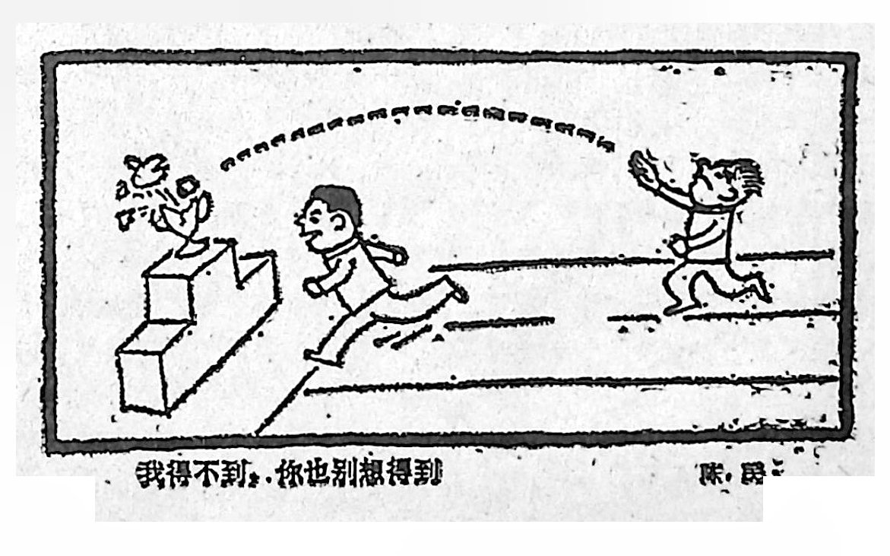

陈昂 《人事》1987年第2期（总第17期），第45页
我得不到，你也别想得到
If I Can't Have It, Neither Can You
- Description
- A young man sprints toward a podium where a trophy waits; from the far end of the track, another man yanks a cord stretched over the lane to stop him.
- Artist
- Chen Ang 陈昂
- Published in
- 《人事》1987年第2期（总第17期）, p. 45
- Themes
- Envy of talent

Cite
Chen Ang, “我得不到，你也别想得到” [If I Can't Have It, Neither Can You], Renshi (Personnel) 《人事》, 1987, no. 2, p. 45.